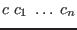
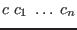

Ur includes a constructor class facility inspired by Haskell's. The current version is experimental, with very general Prolog-like facilities that can lead to compile-time non-termination.
Constructor classes are integrated with the module system. A constructor class of kind  is just a constructor of kind
is just a constructor of kind  . By marking such a constructor
. By marking such a constructor  as a constructor class, the programmer instructs the type inference engine to, in each scope, record all values of types

as instances. Any function argument whose type is of such a form is treated as implicit, to be determined by examining the current instance database. Any suitably kinded constructor within a module may be exposed as a constructor class from outside the module, simply by using a
signature item instead of a
signature item in the module's signature.
as a constructor class, the programmer instructs the type inference engine to, in each scope, record all values of types

as instances. Any function argument whose type is of such a form is treated as implicit, to be determined by examining the current instance database. Any suitably kinded constructor within a module may be exposed as a constructor class from outside the module, simply by using a
signature item instead of a
signature item in the module's signature.
The ``dictionary encoding'' often used in Haskell implementations is made explicit in Ur. Constructor class instances are just properly typed values, and they can also be considered as ``proofs'' of membership in the class. In some cases, it is useful to pass these proofs around explicitly. An underscore written where a proof is expected will also be inferred, if possible, from the current instance database.
Just as for constructors, constructors classes may be exported from modules, and they may be exported as concrete or abstract. Concrete constructor classes have their ``real'' definitions exposed, so that client code may add new instances freely. Automatic inference of concrete class instances will not generally work, so abstract classes are almost always the right choice. They are useful as ``predicates'' that can be used to enforce invariants, as we will see in some definitions of SQL syntax in the Ur/Web standard library. Free extension of a concrete class is easily supported by exporting a constructor function from a module, since the class implementation will be concrete within the module.